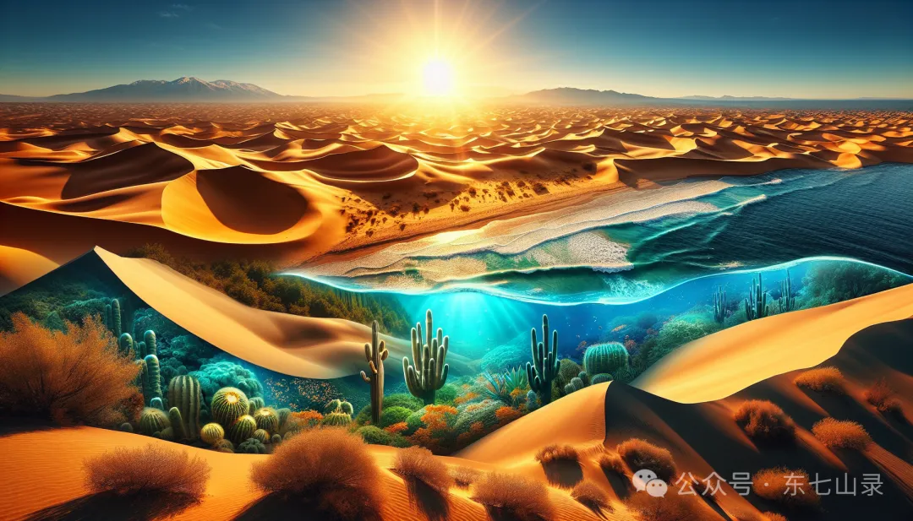

“只有人献出生命，才能得到生命。”
——太白云生
北冥冰魄将他的二姐古月阴荒救醒，二人再次为如何救活父亲，求教思想蛊。
思想蛊道：“人啊，成败山已经消失了，不知道什么时候什么地方才能重新形成。能救活你们的父亲的其他方法，我也不清楚。但不要灰心，你们可以去找智慧蛊问问看。我就是它的母亲，智慧是思想的结晶。”
青出于蓝而胜于蓝，思想蛊不知道的事情，智慧蛊未必不知道。北冥冰魄和古月阴荒便在思想蛊的指点下，找到了智慧蛊。
智慧蛊和人祖有过结，当年人祖动用规矩二蛊，曾经捕捉到智慧蛊。但最终被智慧蛊逃走了。
起先，智慧蛊并不愿意帮助北冥冰魄和古月阴荒。但是看在他们俩，是母亲思想蛊介绍来的，便勉为其难地道：“人啊，我可以为你们指点迷津。但我需要报酬，你们中的一位需要将中年交给我。”
“我把中年交给你吧。”古月阴荒立即道，毫不犹豫。她被弟弟北冥冰魄唤醒，又赋予人生的意义，就是救活父亲人祖。因此这时候答话，当仁不让。
北冥冰魄争不过姐姐，只好让她奉献了她的中年。这就意味着，古月阴荒青年一过，就会直接跳过中年，迈入老年。但为了救活父亲，她也顾不得这么多了。
智慧盅得到了古月阴荒的中年，便指点她道：“在西边的黄金沙漠中央，有一片静止的蓝宝石海洋，风波不兴，平滑如镜。那是万物之源，全天下的生命都来源于那里。而在蓝海深处，有许许多多的生命蛊，照映天下万物。你们去潜入海中，如果能找到人类形状的生命蛊，就将它带上岸来。这块人形的生命蛊，便能赋予你们父亲新的生命。但要注意时间，不能超过一刻钟，否则你们就会被蓝海同化。”

未了，智慧蛊又添加一句：“要找到人形的生命蛊，十分不容易。只有真正理解生命真谛的人，才能做得到。你们如果做不到，不要怪我的方法不好使。”
古月阴荒还想在询问什么，结果智慧蛊说话就飞走了，没有给姐弟俩任何机会。
古月阴荒、北冥冰魄二人艰苦跋涉，穿越黄金沙漠，在沙漠中央，见到了蓝海。蓝海美不胜收。正如智慧蛊所言，即便再大的风，也掀不起蓝海的丝毫波澜。
在周围柔软的黄金沙粒的包裹下，它就像是一块深蓝色的宝石，静静地镶嵌在这块黄金丝绸上。
姐弟俩潜入海底，果然发现海底深处，铺满了密密麻麻的生命蛊。这些生命蛊，就像是一颗颗的蓝宝石。但大小、形状各异。有的像马驹，有的似虎豹，有的类鹰鸽，有的如蛇蛟。
姐弟俩细细寻觅，看得眼花缭乱。花鸟鱼虫，飞乌走兽，雪人毛民等等各种形状的生命蛊都见过了，却唯独找不到人类形状的生命蛊。无奈之下，姐弟俩只好钻出海面，回到岸上。
刚刚离开蓝海，弟弟北冥冰魄手中把玩的那枚鹿形生命蛊，就忽然绽放出柔和的光辉，跳到沙地上，化为一头小鹿。这是生命的诞生！
姐弟俩惊奇地看着这一幕，都瞪大了双眼。
直到小鹿蹦跳着窜出老远，姐姐古月阴荒忽然顿悟：〝难怪智慧蛊最后说了那番话，又不让我们再问，就直接飞走了。我明白生命的真谛了。”
“生命的真谛，那究竟是什么？”北冥冰魄忙问。
古月阴荒便指着眼前的这片蓝海，反问道：“你说，如果我们真的找到一只生命蛊，是人形的蓝宝石。我们将它带出来，它会变成什么？”
北冥冰魄想了一下，答道：“就像是那头小鹿一样，变成真正的鲜活的生命吧。”说到这里，他忽然愣住了。
古月阴荒含笑看他：“看来你也明白了。我们就是这样的生命。我们就是生命蛊所化！我们自己就是人形的蓝宝石！”
北冥冰魄彻底明白过来，“人从哪里来？”智慧蛊在之前就已经说得明白：这片蓝海是万物之源，天下一切生命都来源于此。
人，当然也来源于此。
他们的父亲人祖，曾经就是这海底的一枚蓝宝石。机缘巧合之下，出了海面，形成鲜活的生命，闯荡世间，艰难生存，走到如今这一步。
但人是万物之灵，偌大的蓝海中会有多少人形蓝宝石呢？一定数量极少，甚至极可能只有曾经的人祖一位。
想要在这样广阔的海洋中，寻找一枚小小的蓝宝石，这是多么浩大的工程！这简直比古月阴荒在成败山，寻找唯一的成功蛊，还要艰难千万倍。
“我知道有一个方法，可以尽快地得到人形生命蛊。”古月阴荒忽然道。
“什么方法？”北冥冰魄忽然有了不好的预感。
古月阴荒微微一笑：“那就是让我沉入海底，和这片蓝海同化，重新还原成生命蛊。”
古月阴荒虽然变成了怪物，但本质上还是人。生命的本质，没有改变。既然是人，一旦同化之后，就会形成人形蓝宝石般的生命蛊。这个推测，并没有错。
难怪智慧蛊说过：要注意时间，不能超过一刻钟，否则就会被蓝海同化。智慧蛊说的话，没有一句是废话。
智慧蛊又说：你们如果做不到，不要怪我的方法不好使。从这句话分析—极有可能蓝海当中，已经没有人形蓝宝石了。如果姐弟俩不愿牺牲自己，就不会找得到人形生命蛊。这样一来，就不要怪我智慧蛊，是你们做不到而已。
“不，姐姐你不能就这样牺牲自己。”北冥冰魄连忙阻止道。他虽然想救活父亲，但也不愿意牺牲自己的亲姐姐。
“我能的，我人生的意义，就是救活父亲啊。”古月阴荒一脸平静地答道。
北冥冰魄忽然说不出话来。是他赋予了古月阴荒这个人生的意义，古月阴荒就是为此而活的。换句话讲，如果救活了父亲，那么她的人生就没有意义，那么继续活着还有什么意思呢？只要牺牲自己，就能救活父亲，这真是古月阴荒的人生最大意义啊！
“人，本就是天地间的宝石。只是宝石璀璨与否，需要我们自己的雕琢。我们的每一次努力，每一次选择，都是一次雕琢。”
“而人也只有献出生命，才能得到生命。”古月阴荒悠然说完，便沉入蓝海。
北冥冰魄极力阻止，但阻止不了，古月阴荒成为怪物，力大无比，他不是对手。超过一刻钟后，古月阴荒被蓝海同化，化为一块人形的蓝宝石。
但这枚蓝宝石，并非健全的人形，而是残缺了一小半。这是因为之前，古月阴荒将自己“中年”交易给了智慧蛊。
人们往往在了解什么是生命之前，已将自己的生命消磨了一半。
北冥冰魄含着泪，带着这枚蓝宝石，离开了黄金沙漠。他的心中没有成功的喜悦，而是陷入极大的愧疚当中。从某种程度上讲，是他害死了他的姐姐。